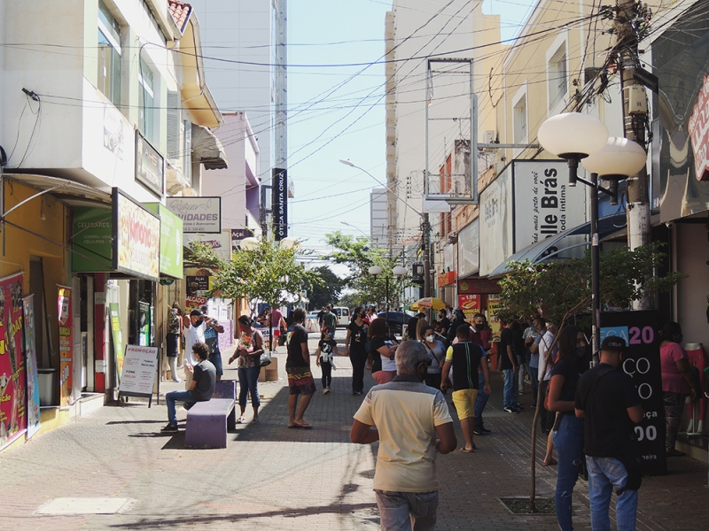

Avenida Costa e Silva
A Avenida Costa e Silva é um dos principais corredores comerciais da cidade, reunindo supermercados, farmácias, bancos e lojas de diversos segmentos. É uma via de grande movimento, tanto comercial quanto residencial.
Pátio Limeira Shopping
Localizado na região central, o Pátio Limeira é um shopping moderno que abriga diversas lojas de marcas nacionais, cinema, praça de alimentação e eventos culturais.
Calçadão Central
Região tradicional para compras em Limeira, o Calçadão concentra lojas populares, bancos, farmácias e serviços. É muito frequentado por moradores de toda a cidade.